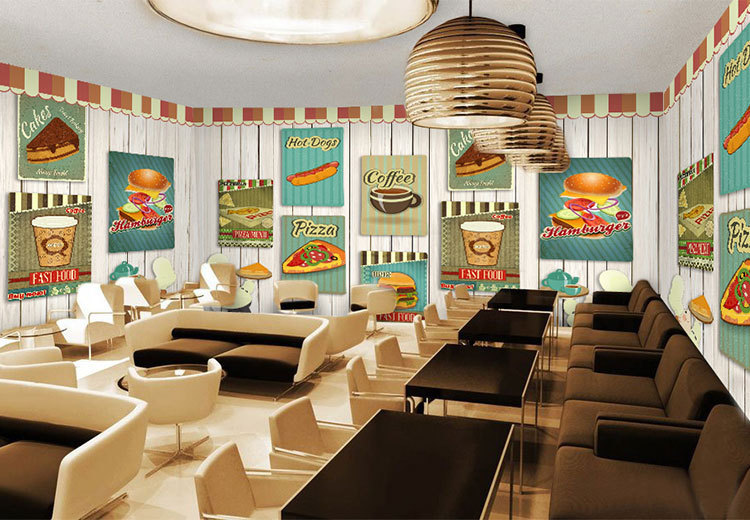
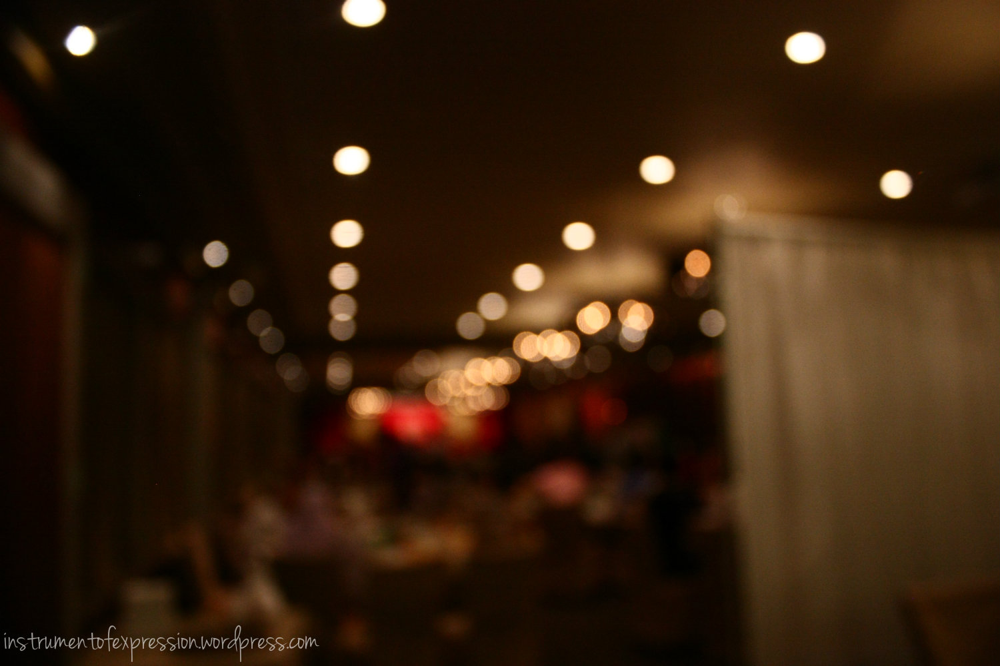

Dobrodošli u {{restoran.naziv}}
|
 | |||||||||||||||||||||||||||||||||||||||||||||||||||||||||||||||||||||||||||||||||||||||||||||||||||
|  |
|
|||||||||||||||||||||||||||||||||||||||||||||||||||||||||||||||||||||||||||||||||||||||||||||||||||
Quote |
O nama |
| Počeli smo kao mali a sada smo veliki iako nismo veliki ali smo dovoljno veliki da ne budemo mali. Sada smo nadam se dovoljno bistri da sami odlučujemo o svojoj sudbini. | Još davne 1991. godine, restoran je (tada zvan Restač) imao jaku reputaciju među stanovnicima Novog Zagreba. Od kada ga, 2014. godine, preuzimaju nadobudnih 8 prijatelja restoran je preimenovan u "{{restoran.naziv}}" te poprima, uz stare kvalitete, nove, uzbudljive sadržaje. |